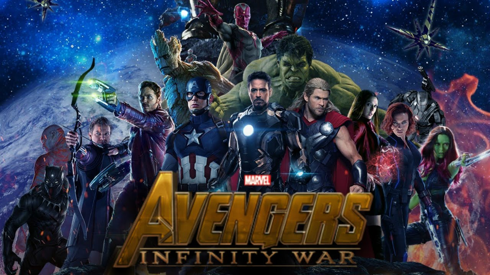

1) Avengers(infinity) :
Genre: Fantactic, Adventure, Superhero film
Release date: April 27, 2018 (United States)
Short Discription: As the Avengers and their allies have continued to protect the world from threats too large for any one hero to handle, a new danger has emerged from the cosmic shadows: Thanos. A despot of intergalactic infamy, his goal is to collect all six Infinity Stones, artifacts of unimaginable power, and use them to inflict his twisted will on all of reality. Everything the Avengers have fought for has led up to this moment – the fate of Earth and existence itself has never been more uncertain.
2) Fast Furious 8:
Genre: Action, thriller, crime
Release date: April 4, 2017
Short description: Now that Dom and Letty are on their honeymoon and Brian and Mia have retired from the game-and the rest of the crew has been exonerated-the globetrotting team has found a semblance of a normal life. But when a mysterious woman seduces Dom into the world of crime he can't seem to escape and a betrayal of those closest to him, they will face trials that will test them as never before. From the shores of Cuba and the streets of New York City to the icy plains off the arctic Barents Sea, the elite force will crisscross the globe to stop an anarchist from unleashing chaos on the world's stage... and to bring home the man who made them a family.
3) Vampire Diaries:

Genre: Drama, Supernatural, Horror, Fantasy
Release date: September 10, 2009 – March 10, 2017
Short descripiton: The series is set in the fictional town of Mystic Falls, Virginia, a town charged with supernatural history since its settlement of migrants from New England in the late 19th century. It follows the life of Elena Gilbert (Nina Dobrev), a teenage girl who has just lost both parents in a car accident, as she falls in love with a 162-year-old vampire named Stefan Salvatore (Paul Wesley). Their relationship becomes increasingly complicated as Stefan's mysterious older brother Damon Salvatore (Ian Somerhalder) returns, with a plan to bring back their past love Katherine Pierce, a vampire who looks exactly like Elena. Although Damon is initially the villain and harbors a grudge against his brother for forcing him to become a vampire, he later reconciles with Stefan and falls in love with Elena, creating a love triangle among the three. Both brothers protect Elena as they face various villains and threats to their town, including Katherine. The brothers' history and the town's mythology are revealed through flashbacks as the series goes on.
4) Teen Wolf:

Genre: Drama, Horror, Tragedy, Romantic
Release date: June 5, 2011 - September 24, 2017
Short description: The series revolves around social outcast Scott McCall, a high school student living in the town of Beacon Hills. Scott's life drastically changes when he is bitten by a werewolf the night before sophomore year, becoming one himself. He must henceforth learn to balance his problematic new identity with his day-to-day teenage life. In season one, Scott and his human best friend "Stiles" Stilinski begin to encounter other characters with a connection to the supernatural goings-on in Beacon Hills. Scott's initial love interest is Allison Argent, a classmate of his who comes from a family of werewolf hunters. Her best friend is popular girl and genius Lydia Martin, who later discovers she is a banshee. Scott and Stiles routinely clash with Lydia's aggressive boyfriend, jock Jackson Whittemore, as well as Derek Hale, a mysterious werewolf with a dark past. As the show progresses, Scott is joined by new friends in Malia Tate, a werecoyote; Kira Yukimura, a kitsune; and Liam Dunbar, a young werewolf with anger issues.
home